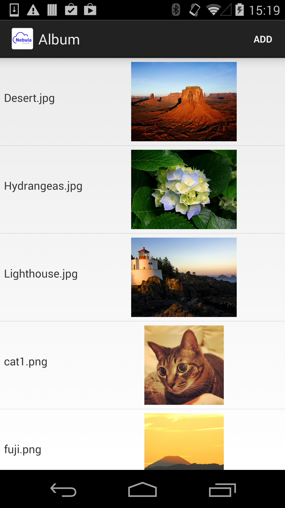
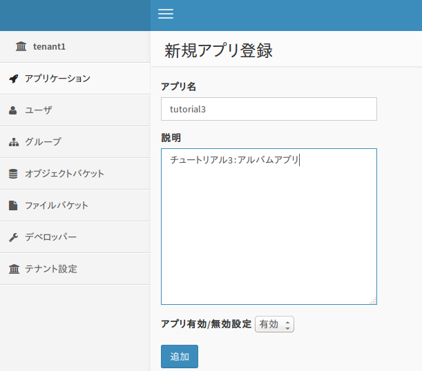
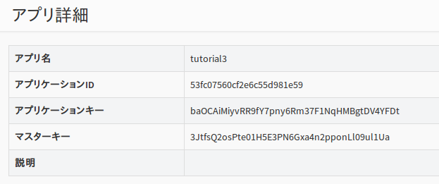
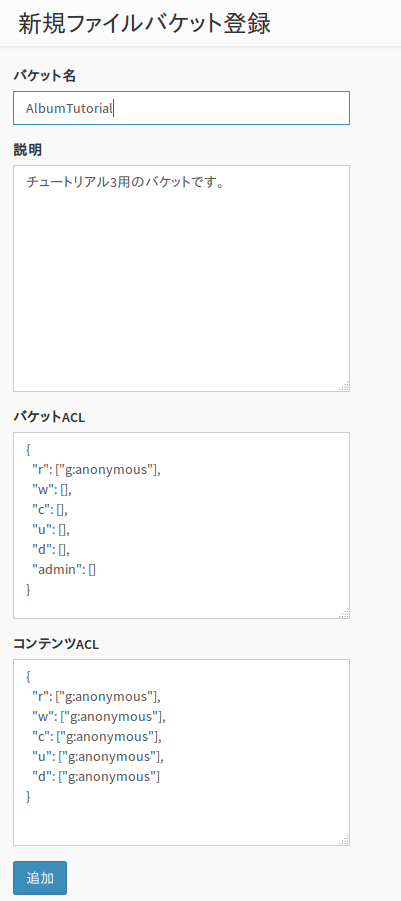
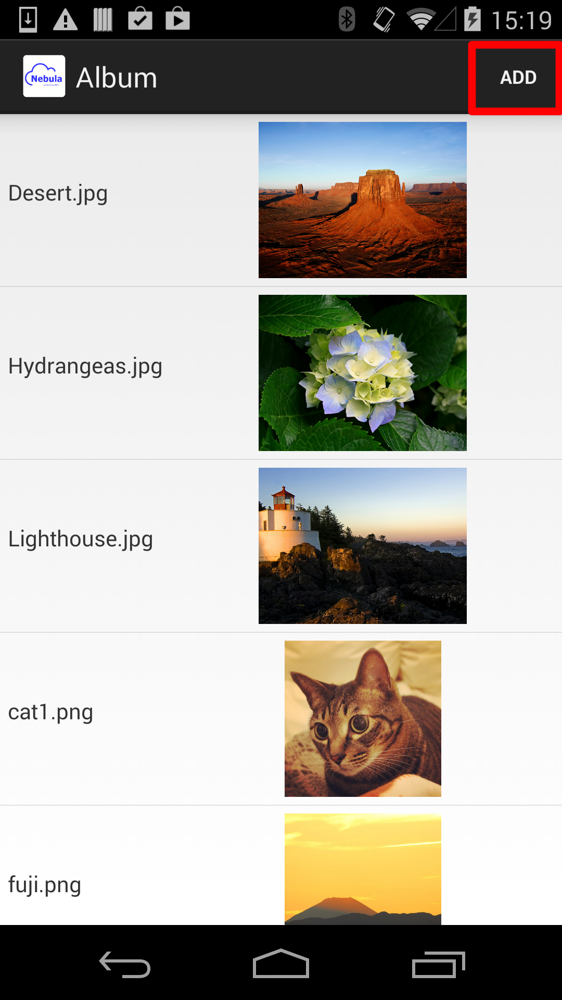
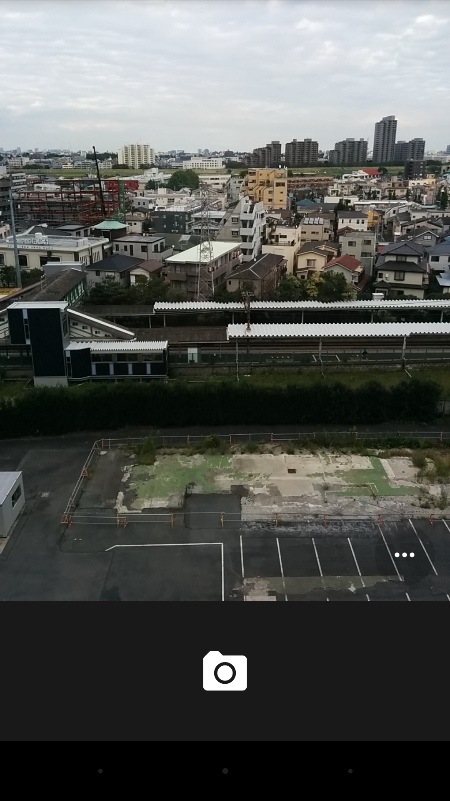
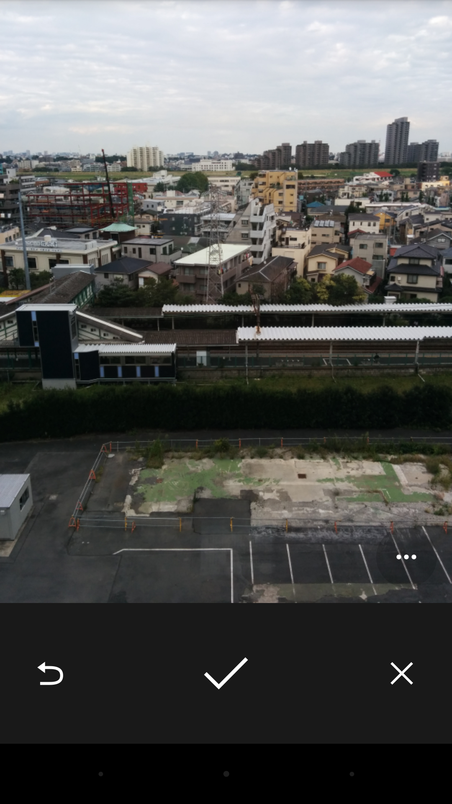
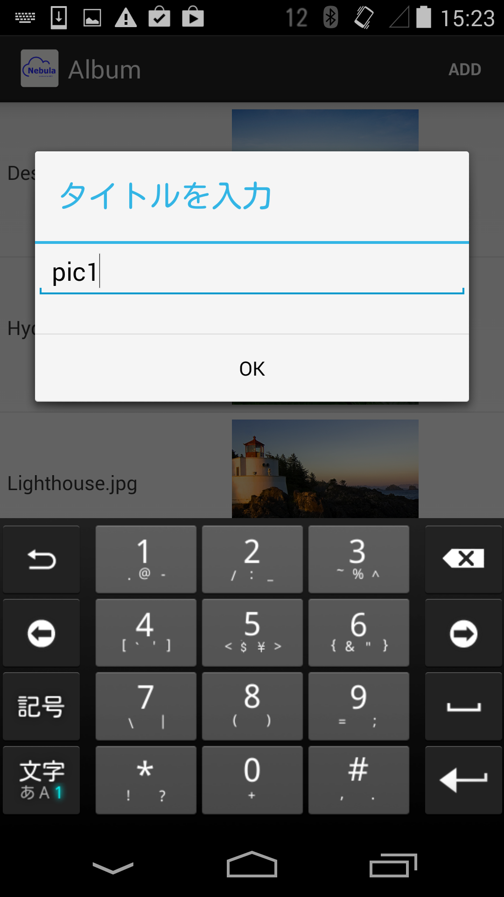
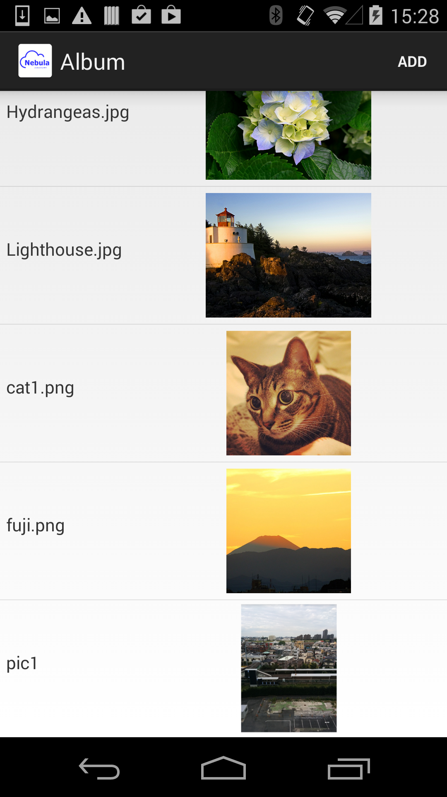

5. チュートリアル3 : アルバムアプリ (ファイルストレージ)¶
チュートリアル3では、Android SDK を使用して簡単な アルバムアプリ(Androidネイティブアプリ)を作成します。
{kind=link}
- 端末のカメラを使用して写真を撮影し、追加したり削除することができます。
- データは BaaS サーバ上の「ファイルストレージ」に格納されます。
- 本アプリは Android 端末上で動作するネイティブアプリで、Java で作成します。
なお、本チュートリアルでは、簡単のためユーザ認証やアクセス制御は一切 行いません。ユーザ認証を行うチュートリアルは、他のチュートリアルを参照してください。
5.1. 新規アプリケーションを作成¶
まず、BaaS サーバのデベロッパコンソールにログインし、新規アプリケーションを作成します。
ブラウザを開き、デベロッパコンソールにアクセスし、 ID とパスワードを入力してログインしてください。

ログインが完了すると、テナント名の一覧が表示されます。ここに表示されている テナントID は後ほど使用しますので、メモしておいてください。
使用するテナントをクリックします。

「アプリケーション」をクリックし、「追加」ボタンを押して新規アプリケーションを作成します。
ここではアプリ名と説明文を上記のように入力します。
アプリの作成が完了すると、アプリの詳細情報が表示されます。 ここで表示される「アプリケーションID」「アプリケーションキー」は アプリケーションの認証に使用する秘密情報です。 この２つは後ほど使用しますので、メモしておいてください。
5.2. バケットの作成¶
写真情報を格納するための「バケット」を作成します。
画面左の「ファイルバケット」⇒「追加」をクリックして、バケットを追加します。
バケット名は "AlbumTutorial" としてください。
また、バケットのアクセス権限を変更し、誰でも(anonymousユーザ)バケットを読み書きできるようにします。 (デフォルトでは、認証ユーザしかバケットを読み書きできないようになっています）
上記を参照して設定してください。
5.3. サンプルコードの変更¶
チュートリアル3のサンプルコードを設定し、実際に動作させてみます。
チュートリアルの tutorial3/src/main/java/com/nec/android/baas/tutorial3 ディレクトリにある Consts.java ファイルを 以下のように変更します。
public abstract class Consts {
/**
* テナントID
*/
public static final String TENANT_ID = "53c379dc4b54a455b6777730";
/**
* アプリケーションID
*/
public static final String APP_ID = "53c379fa4b54a455b6777734";
/**
* アプリケーションキー
*/
public static final String APP_KEY = "ZmoFlxp3Klr11GZbyV11UsroMsAgMWyxncEHKuLJ";
/**
* エンドポイントURI
*/
public static final String ENDPOINT_URI = "https://api.example.com/api/";
/**
* データベース暗号化用パスワード
*/
public static final String ENCRYPT_KEY = "";
}
- TENANT_ID には テナントIDを設定してください。
- APP_ID にアプリケーションIDを設定してください。
- APP_KEY にアプリケーションキーを設定してください。
- ENDPOINT_URI には、NEC BaaS API サーバの URL を指定してください。パスの /api/ まで必要なので注意してください。
- ENCRYPT_KEY は本チュートリアルでは使用しませんので、空文字列で構いません。
5.4. サンプルの実行¶
Android Studio から tutorial3 ディレクトリをプロジェクトとしてインポートし、 ビルド・実行してください。
{kind=link}
ADD ボタンを押すと、写真を追加するため、カメラを起動します。
{kind=link}
撮影後、決定を押下します。
{kind=link}
タイトルを入力します。
{kind=link}
撮影した写真が追加されます。
{kind=link}
なお、写真を長押しすると、削除します。
また、メニューから Refresh を選択すると、サーバからデータをリロードします。
5.5. 注意事項¶
- Androidエミュレータで動作させる場合は、あらかじめ設定でカメラとSDカードを使用できるように設定してください。